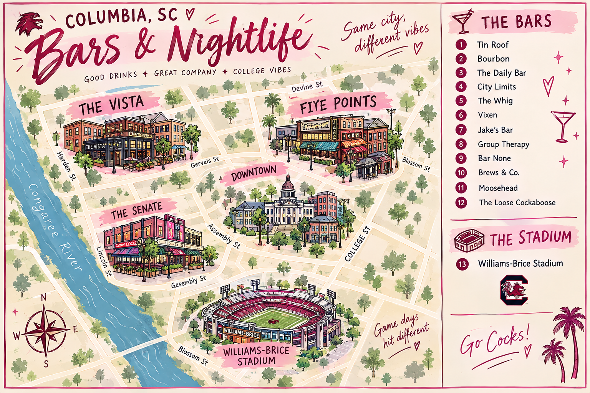

Columbia, SC Nightlife Guide
When the school day is over, Columbia has plenty of ways to unwind and have fun. From popular spots around Five Points and The Vista to late-night food, entertainment, and places to hang out with friends, there’s something for everyone. Explore this guide to find fun things to do after class and make the most of your time outside of the classroom.

Vista Union
Vista Union is a restaurant and nightlife spot in the Vista that is great for dinner, craft cocktails, and spending time with friends. Its billiard room makes it a fun option for groups looking for something more than just a typical bar. Bars and venues in the area include Beach Bar & Grill, Baileys, and Vista
Five Points
Five Points is one of Columbia’s most popular nightlife areas, especially for USC students. The neighborhood has a mix of restaurants, live music, sports bars, and late-night spots, so it is easy to find something for different groups and moods. Bars and venues in the area include Social, Group Therapy, Luckys, Chicken on a Stick, Publico, Jake’s Bar & Grill, and CJ’s of Five Points.
Frat Lots
The Fraternity Lot is a private game-day tailgating area near USC where many fraternity organizations gather before football games. It is not open to the general public, so students should check entry rules and wristband requirements before making plans.